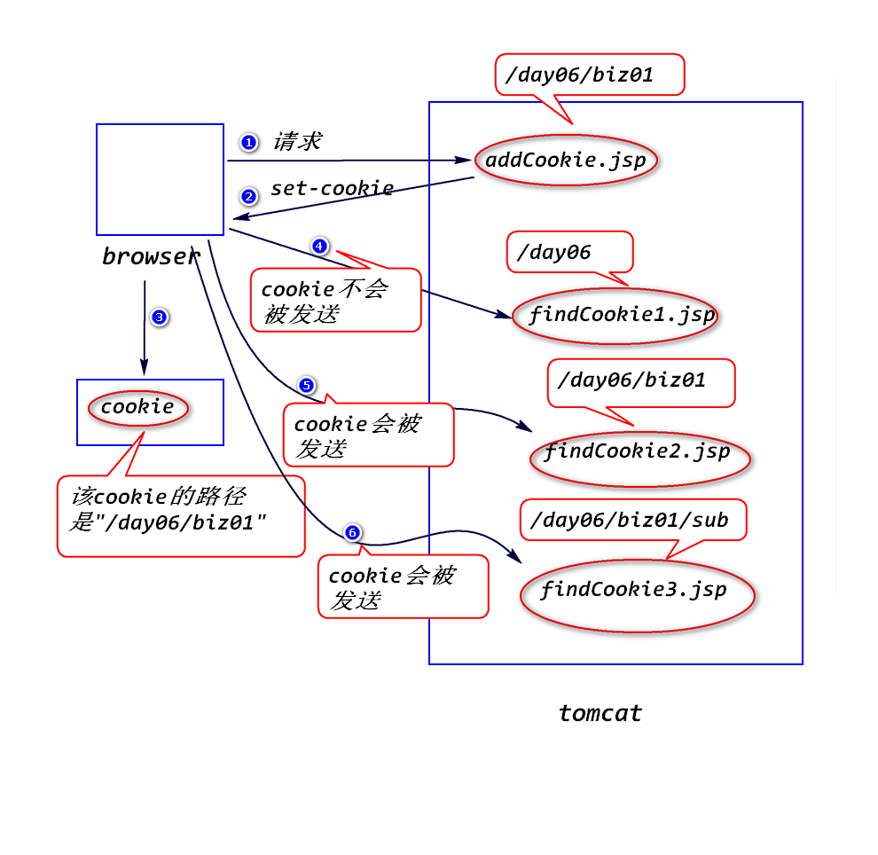

转发可以，而重定向不行。
当请求到达容器，容器创建request对象和response对象，当
响应发送完毕，容器会销毁这两个对象。也就是说，request对象
和response对象的生存时间是一次请求和响应期间存在。
转发有限制,重定向没有。
转发地址要求属于同一个web应用，重定向地址是任意的。
转发没有变化，重定向有变化。
转发是一件事没有做完，让另外一个web组件继续做； 而重定向是一件事已经完成，再做另外一件独立的事件。
将浏览器与web服务器之间多次交互当做一个整体来处理，并且将多次 交互所涉及的数据(即状态)保存下来。
a.将状态保存在浏览器端(Cookie)。
b.将状态保存在服务器端(Session)。
服务器临时存放在浏览器端的少量数据，用于跟踪用户的状态。
当浏览器访问服务器时，服务器会将少量数据以set-cookie消息头的
方式发送给浏览器，浏览器会将这些数据临时保存下来；当浏览器再
次访问服务器时，会将这些数据以cookie消息头的方式发送给服务器。
Cookie c = new Cookie(String name,String value);
注：
cookie只能存放字符串。
response.addCookie(c);
Cookie[] request.getCookies();
String cookie.getName();
String cookie.getValue();
默认情况下，浏览器会将cookie保存在内存里面。浏览器关闭，则cookie 会被删除。
cookie.setMaxAge(int seconds);
注:
a.单位是秒。
b.当seconds > 0时，浏览器会将cookie保存在硬盘上，当超过
指定时间，cookie会被删除。
c.当seconds < 0时，浏览器会将cookie保存在内存里面。
d.当seconds = 0时，浏览器会立即删除该cookie。
比如，要删除一个名称为"username"的cookie:
Cookie c = new Cookie("username","");
c.setMaxAge(0);
response.addCookie(c);
a.什么是cookie的编码问题?
cookie只能存放合法的ascii字符，中文需要转换成合法的
ascii字符的形式才能存放。
b.如何处理?
String URLEncoder.encode(String str,String charset);
String URLDecoder.decode(String str,String charset);
c.建议，不管是否为中文，最好统一编码处理。
a.什么是cookie的路径问题?
浏览器访问服务器时，会比较请求地址是否与cookie的路径匹配，
只有匹配的cookie才会被发送。
b.cookie的默认路径
cookie的默认路径等于添加该cookie的web组件的路径。
比如 /day06/biz01/addCookie.jsp添加了一个cookie,
则该cookie的路径就是"/day06/biz01"。
c.匹配规则
请求路径必须等于cookie的路径或者是其子路径，只有满足该条件
的cookie才会被发送。
比如，cookie的路径是"/day06/biz01",则访问如下地址
/day06/findCookie1.jsp no
/day06/biz01/findCookie2.jsp yes
/day06/biz01/sub/findCookie3.jsp yes

d.可以修改cookie的路径
cookie.setPath(String path);
写一个Servlet,该Servlet先查看有没有一个名称为"cart"的cookie, 如果有，则显示该cookie的值；如果没有，则添加该Cookie。
Cookie c = new Cookie("cart","123");